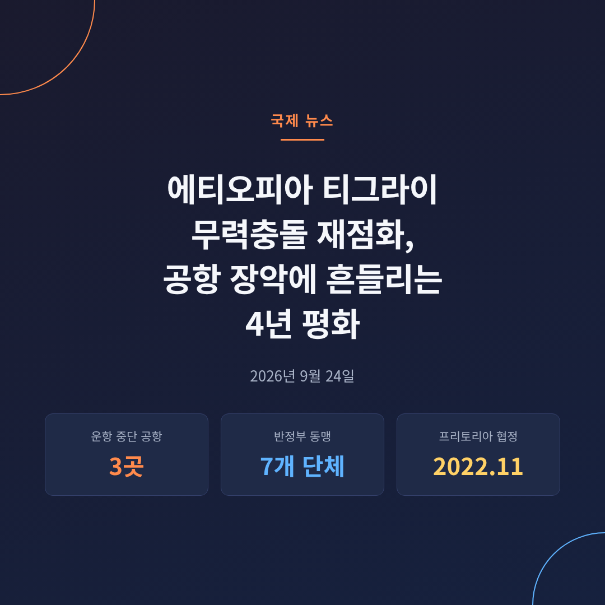
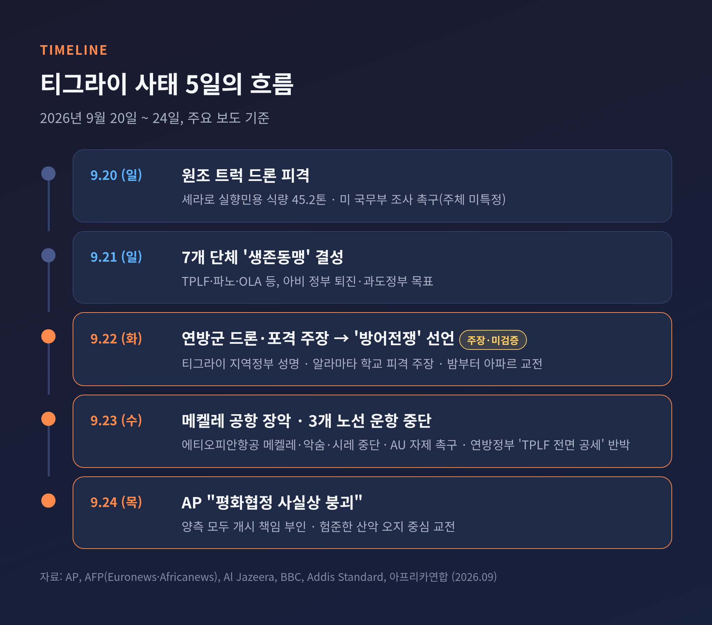
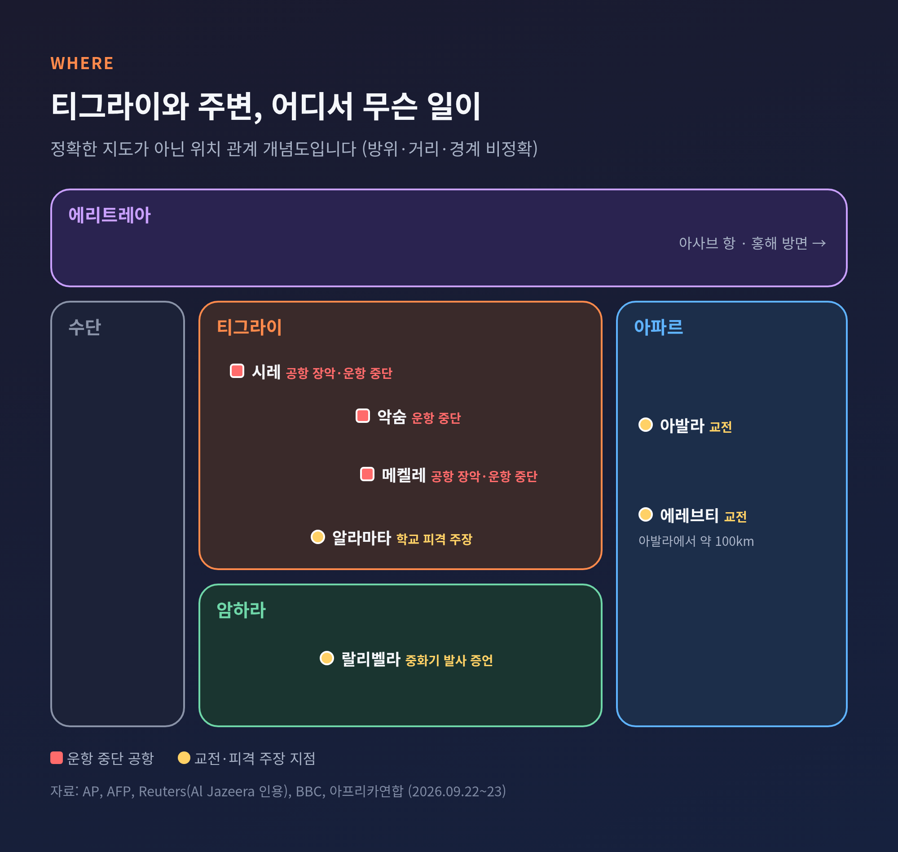
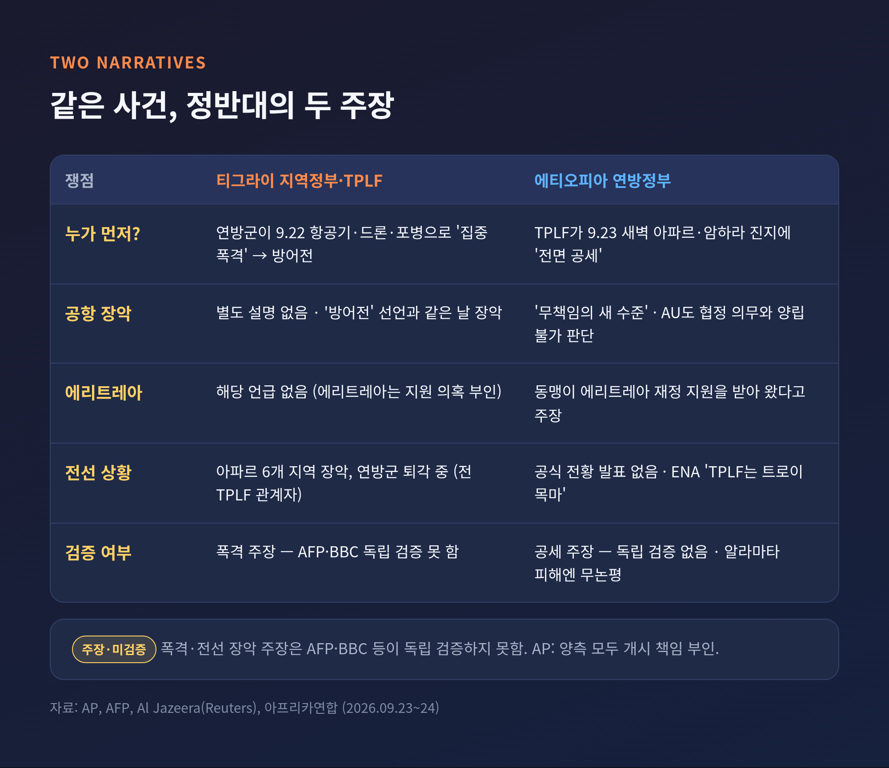
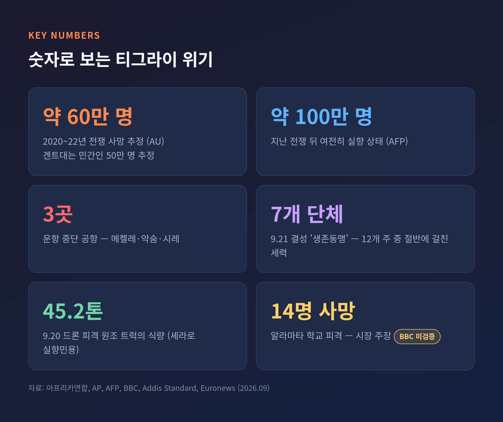
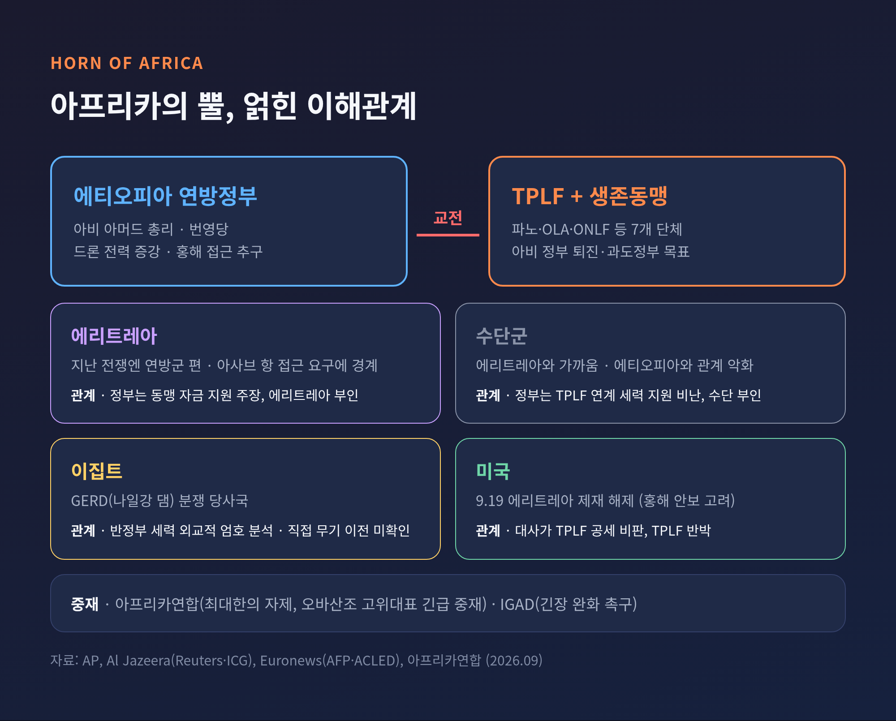
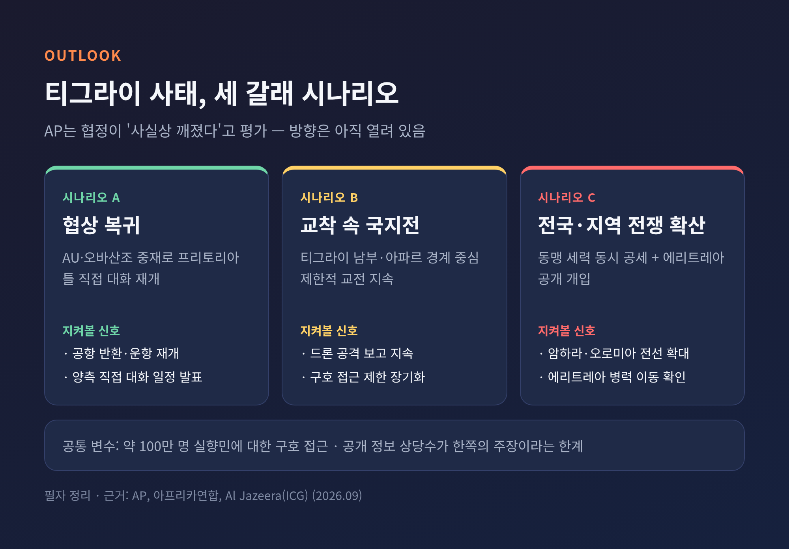

에티오피아 티그라이 무력충돌 재점화, 공항 장악에 흔들리는 4년 평화

이번 글에서는 에티오피아 북부 티그라이에서 다시 불붙은 무력충돌을 정리해 보겠습니다.
사흘 사이에 무슨 일이 있었는지, 양측은 각각 무엇을 주장하는지, 이 싸움이 왜 아프리카의 뿔 전체를 긴장시키는지 차례로 살펴봅니다.
3줄 요약
- 티그라이 지역정부는 9월 22일 연방군의 드론·포격을 이유로 '방어전쟁'을 선언했고, 연방정부는 TPLF가 먼저 전면 공세를 시작했다고 반박합니다.
- 9월 23일 TPLF 전투원이 메켈레 공항을 장악했고, 에티오피안항공은 메켈레·악숨·시레 노선을 멈췄습니다.
- 아프리카연합은 최대한의 자제를 촉구했지만, 7개 무장단체 동맹과 에리트레아 변수로 2022년 프리토리아 평화협정은 사실상 무너졌다는 평가가 나옵니다.

무슨 일이 있었나 — 사흘 만에 뒤집힌 북부 에티오피아
출발점은 9월 22일(화)입니다.
티그라이 지역정부는 연방군이 항공기·드론·포병으로 "집중 폭격"을 가했다고 페이스북 성명에서 주장했습니다.
그리고 자신들의 군대가 "방어전"에 들어갔다고 밝혔습니다.
AFP는 이 폭격 주장을 독립적으로 검증하지 못했다고 전했습니다.
같은 날 남부 티그라이 알라마타에서도 피해 주장이 나왔습니다.
모고스 시페라우 시장은 BBC에 드론 5대 이상과 전투기 1대가 새벽 3시 30분쯤부터 21차례 넘게 타격했다고 말했습니다.
학교 두 곳이 맞아 최소 14명이 숨지고 22명이 다쳤으며 모두 민간인이라는 설명입니다.
BBC는 이를 검증하지 못했고, 연방정부는 공개 논평을 내지 않았습니다.
9월 23일(수)에는 상황이 눈에 보이게 달라졌습니다.
TPLF(티그라이인민해방전선) 전투원들이 연방 경찰이 지키던 메켈레 공항을 장악했습니다.
AP가 만난 택시기사는 경무장한 전투원들이 "비행기는 내리지 않는다"며 자신을 내보냈다고 전했습니다.
총성은 들리지 않았다고 합니다.
국영 에티오피안항공은 메켈레·악숨·시레 세 공항 운항을 "현 상황 때문에" 중단했습니다.
이 지역에 취항하는 다른 항공사는 없습니다.
하늘길이 사실상 닫힌 셈입니다.
교전은 티그라이 밖으로도 번졌습니다.
AFP가 인용한 인도주의 요원들은 22일 밤부터 이웃 아파르주 아발라와 에레브티에서 전투가 벌어졌다고 말했습니다.
Reuters는 암하라주 랄리벨라에서도 연방군이 중화기를 쏘고 있다는 주민 증언을 전했습니다.

같은 사건, 정반대의 두 이야기
이번 사태에서 가장 먼저 짚어야 할 점은 양측의 설명이 정면으로 엇갈린다는 것입니다.
티그라이 측 주장은 이렇습니다.
연방군이 먼저 드론과 중포로 공격했고, 자신들은 "침략"에 맞서 방어할 뿐이라는 것입니다.
지역정부는 이를 "제노사이드적 침략"이라고까지 불렀습니다.
연방정부 측 주장은 다릅니다.
총리 보좌관 게타추 레다는 TPLF가 23일 이른 아침 아파르와 암하라의 정부 진지에 "전면 공세"를 시작했다고 X에 적었습니다.
공항 장악을 두고는 TPLF 지도부가 "무책임을 새로운 수준으로 끌어올렸다"고 비판했습니다.
국영 에티오피아통신은 TPLF를 "트로이 목마"라고 표현했습니다.
전선 상황을 두고도 말이 다릅니다.
전 TPLF 고위 관계자는 AFP에 아파르의 6개 지역을 장악했고 연방군이 빠르게 퇴각 중이라고 주장했습니다.
AFP는 이 역시 확인하지 못했습니다.
AP의 정리가 현재로서는 가장 정확해 보입니다.
양측 모두 이번 적대행위를 먼저 시작했다는 책임을 부인하고 있고, 전투는 주로 험준한 산악 오지에서 벌어져 외부 확인이 어렵다는 것입니다.

왜 중요한가 — 60만 명이 숨진 전쟁의 재발 위험
이번 충돌이 무거운 이유는 불과 4년 전의 기억 때문입니다.
2020년 11월부터 2022년 11월까지 이어진 티그라이 전쟁은 막대한 인명 피해를 남겼습니다.
아프리카연합(AU)은 약 60만 명이 숨졌다고 추정합니다.
벨기에 겐트대 연구진은 폭력·기근·보건체계 붕괴를 포함한 민간인 사망을 50만 명으로 봤습니다.
기관마다 수치는 다르지만, 수십만 명 규모라는 점은 같습니다.
그 상처는 아직 아물지 않았습니다.
AFP에 따르면 약 100만 명이 여전히 집으로 돌아가지 못했습니다.
평화협정의 여러 조항도 이행되지 않은 상태입니다.
전쟁의 조짐은 이미 인도적 현장에 닿아 있습니다.
9월 20일에는 셰라로의 실향민에게 식량 45.2톤을 나르던 가톨릭 구호 트럭이 드론 공격을 받았습니다.
미 국무부는 공격 주체를 특정하지 않은 채 완전한 조사를 촉구했습니다.
아파르의 한 구호 요원은 AFP에 "확산될 것으로 예상한다"고 말했습니다.

배경 — 평화협정은 어떻게 금이 갔나
2022년 11월 2일, 에티오피아 정부와 TPLF는 AU 중재로 남아공 프리토리아에서 적대행위 영구 중단에 합의했습니다.
협정 뒤 메켈레에는 아비 아머드 총리에게 우호적인 임시행정부가 들어섰습니다.
문제는 티그라이 내부에서 먼저 터졌습니다.
프리토리아에서 티그라이 대표단이 한 양보를 두고 불만이 쌓였습니다.
협상 대표였던 게타추 레다는 임시행정부 수반을 맡았다가 2025년 물러났고, 타데세 웨레데 중장이 뒤를 이었습니다.
게타추는 이후 동료들과 갈라서 연방정부에 합류했습니다.
올해 5월에는 결정적인 일이 있었습니다.
TPLF가 타데세 웨레데를 밀어내고, 지난 전쟁을 이끌었던 데브레치온 게브레미카엘 중심의 평의회를 세웠습니다.
협정이 만든 임시행정부 틀을 사실상 거부한 것입니다.
그 사이 무력의 신호도 커졌습니다.
AFP는 협정이 2025년 말까지 불안한 평온을 유지하다 이후 충돌이 재개됐다고 전합니다.
AP는 7월 이후 티그라이에서 드론 공격 보고가 이어졌고 지역정부가 연방군을 지목해 왔다고 보도했습니다.
연방정부도 할 말이 있습니다.
게디온 티모테오스 외교장관은 6월, TPLF 강경파가 협정을 어기고 무기를 사들여 왔다고 주장했습니다.
인권단체들은 TPLF가 올해 강제 징집을 벌였다고 비판합니다.
예전엔 TPLF 내부의 권력 다툼이 갈등의 중심이었습니다.
지금은 전선이 티그라이 경계를 넘어 에티오피아 전역의 반정부 세력으로 넓어졌습니다.
쟁점 1 — 옛 적과 손잡은 '7개 단체 동맹'
9월 21일, TPLF를 포함한 7개 단체가 '에티오피아 인민세력 생존동맹'을 선언했습니다.
목표는 아비 총리 정부를 끌어내리고 과도정부를 세우는 것입니다.
참여 단체는 이렇습니다.
- 티그라이인민해방전선(TPLF)
- 암하라 파노 국민운동
- 오로모해방군(OLA)
- 오가덴민족해방전선(ONLF)
- 아파르혁명민주통일전선
- 베니샹굴인민해방운동
- 구무즈인민민주운동
눈에 띄는 이름은 파노입니다.
지난 전쟁에서 파노는 연방군 편에서 TPLF와 싸웠습니다.
그러다 2023년부터 정부와 무력 충돌을 벌여 왔고, 이번엔 TPLF의 동맹이 됐습니다.
Reuters는 정부·외교 소식통을 인용해 티그라이군이 암하라에서 파노와 함께 싸우고 있다고 보도했습니다.
오슬로 뉴 유니버시티 칼리지의 셸틸 트론볼은 "이번엔 파노가 동맹이고 에리트레아가 후원자"라고 분석했습니다.
2020년과는 판이 다르다는 뜻입니다.
반대로 정부 측의 힘도 가볍지 않습니다.
연방군은 지난 전쟁 이후 군용 드론 생산을 늘려 상당한 우위를 쥐고 있습니다.
TPLF 역시 과거 군 지휘부를 장악하던 시절 물려받은 탱크·포·장거리 로켓 등을 보유하고 있다고 AFP는 전합니다.
아비 총리의 번영당은 6월 총선에서 재집권했지만, 주요 야당이 선거를 보이콧했다는 점도 정치적 부담으로 남아 있습니다.
쟁점 2 — 에리트레아와 아프리카의 뿔 지정학
이번 사태를 국지전으로만 볼 수 없는 이유가 에리트레아입니다.
빌레네 세유움 총리실 대변인은 Reuters에 반정부 동맹이 에리트레아의 재정 지원을 받아 왔다고 주장했습니다.
에리트레아는 비슷한 의혹을 반복해서 부인해 왔습니다.
분쟁 감시단체 ACLED는 올해 초 에리트레아군이 티그라이군과 조율해 서부 티그라이 쪽으로 이동했고, 무기를 제공했다고 평가했습니다.
지난 전쟁에서 에리트레아는 연방군 편이었습니다.
관계가 뒤집힌 배경에는 바다가 있습니다.
내륙국 에티오피아의 아비 총리는 에리트레아 아사브 항을 통한 홍해 "주권적 접근"을 거듭 언급해 왔고, 에리트레아는 이를 위협으로 받아들입니다.
주변 정세도 얽혀 있습니다.
에티오피아 정부는 5월 수단군이 TPLF 연계 세력을 지원했다고 비난했고, 수단은 부인했습니다.
국제위기그룹(ICG)의 앨런 보스웰은 에리트레아가 수단군과 가깝고, 에티오피아와 수단군의 관계는 악화 중이라고 짚었습니다.
그는 이 모든 것이 "하나의 거대한 지역적 혼란"이 되어 가고 있다고 경고했습니다.
나일강 그랜드 에티오피아 르네상스 댐(GERD)을 두고 다투는 이집트가 반정부 세력에 외교적 엄호를 제공한다는 분석도 있습니다.
다만 TPLF로의 직접 무기 이전은 확인되지 않았습니다.
미국의 움직임도 변수입니다.
미국은 9월 19일, 2021년 티그라이 전쟁 당시 부과했던 에리트레아 집권당·군 제재를 해제했습니다.
후티 반군의 위협으로 바브엘만데브 해협 안보가 흔들리는 상황에서, 아사브 항 인근의 전략적 가치가 배경으로 거론됩니다.

국제사회의 대응 — "최대한의 자제"
AU의 마흐무드 알리 유수프 집행위원장은 9월 23일 성명을 냈습니다.
메켈레·악숨·시레 공항 장악과 TPLF의 연방 인력 억류, 민항 중단에 깊은 우려를 표했습니다.
공항 장악은 프리토리아 협정의 의무와 "양립할 수 없다"고 명시했습니다.
그는 최대한의 자제와 긴장 고조 행위의 즉각 중단, 협정 틀 안에서의 직접 대화 재개를 촉구했습니다.
인접국에도 사태를 키우는 행동을 삼가라고 요청했습니다.
올루세군 오바산조 전 나이지리아 대통령에게는 긴급 중재를 맡겼습니다.
동아프리카 지역기구 IGAD도 긴장 완화를 요구했습니다.
미국의 어빈 마싱가 주에티오피아 대사는 TPLF의 공세를 "잘못된 결정"이자 "이길 수 없는 싸움"이라고 비판했습니다.
TPLF 측은 이 평가가 부당하다고 반박했습니다.
에티오피아 정부 역시 국제무대에서 목소리를 냈습니다.
타예 아츠케 셀라시에 대통령은 유엔총회에서 에티오피아가 "막대한 자제"를 해 왔다고 강조했습니다.
전망 — 세 가지 갈림길
AP는 9월 24일 기사에서 이번 교전이 2022년 평화협정을 "사실상 깨뜨렸다"고 평가했습니다.
다만 앞으로의 방향은 아직 열려 있습니다.
지켜볼 지점은 세 가지입니다.
- 전선의 확산 여부: 아파르·암하라 교전이 파노·OLA 등 동맹 세력의 다른 지역 공세로 번지는지.
- 에리트레아의 선택: 의혹 수준의 지원이 공개적 개입으로 바뀌는지, 그리고 아사브 항 문제가 어떻게 다뤄지는지.
- 중재의 실효성: 오바산조 고위대표의 중재가 양측을 프리토리아 틀의 협상 테이블로 다시 불러낼 수 있는지.
어느 쪽이든 부담은 민간인에게 먼저 돌아갑니다.
공항이 닫히고 원조 트럭이 공격받는 상황에서, 100만 명의 실향민에게 도움이 닿을 길은 더 좁아졌습니다.
공개된 정보 대부분이 한쪽의 주장이라는 한계도 분명합니다.
당분간은 확인된 사실과 주장을 가려 읽는 신중함이 필요해 보입니다.

정리하면 이렇습니다.
프리토리아 협정은 총성을 멈추게 했지만, 권력과 안보의 문제까지 풀지는 못했습니다.
"평화협정은 서명으로 끝나지 않고, 이행으로 지켜진다."
4년 전 멈췄던 전쟁이 다시 시작될지 묻는다면, 그 답은 이번 주 메켈레 공항이 아니라 협상 테이블이 언제 다시 열리느냐에 달려 있다고 답하겠습니다.